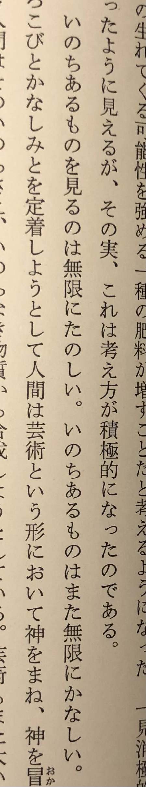

R404
4/1
現実はいろいろあって大変だな
現実が満ち足りていればここまで物語が生みだされることはなかったと思う、物語の存在意義というかありがたいところはそこにあるような気がする僕にとって
4/3
最近腸活サボっていたからまた胃腸の調子悪い
ヨーグルトとか納豆とか野菜とか食べよう
腸活就活婚活妊活ラン活生活
終活
世の中いろんな学問分野あっておもしろいと思った
それぞれちゃんと名前が付けられて存在を保証されているようなところがいいなと思った
竜騎士07さんの日記
相当過酷な環境でひぐらしを書いていたらしい
4/4
猫騙し編の四
相対性理論
竜騎士07さんの日記を
4/7
今日バイト行くとき財布忘れて着いた駅で電車賃足りずやばかった
4/11
委員長の配信初めて聞いた4/11
沙都子はやっぱり沙都子でよかった
何かで現状主流になっている中の人の性質が色濃く出ているvtuberは本来の計画にはなかったというのを見たことがある
たしかに理想としては中の人なんていないのがいいのかもしれない
ただ中の人がいた方がやはり人間を相手にしているような気がして視聴者は安らぎを得やすいのかもしれない
AIがもうちょっと発達すれば中の人がいないvtuberが出てくるのかな
初音ミクとかも
人々がそれを受容するかどうかは別として
人類以外の知性に触れてみたい気はとてもある
起立気をつけ、ありがとうございました。
4/12
親がうるさい
ひぐらし卒見終わった
ありがとう竜騎士07先生
ありがとう雛見沢
竜騎士先生のインタビュー
ここ数年で安定した人間関係って自然とできるものではなくて
双方が互いに波長を合わせようとがんばってがんばってがんばって
初めて成り立つものなんだなと気づいた
人間は本来分かり合えないということにもここ数年で気づいたので、
だとしたら尚のこと、
これはとてもとても非常にまさしく尊いことだなと思った
高校の頃くらいまではそういうことが全く分からなくて、結局クラスでも孤立していたし、大学でも尾を引いていた気がする
我が道を行くのは悪いことではないと今でも思っているけれど
和を重んじて周りに溶け合おうとすることも大事だなと
ようやく気づけた気がする
それから礼儀を尽くすこと、誠実であろうとすること
が大事だなと思う
から大事に大切にしていきたい
どの世界で生きるにせよ。
4/13
高村光太郎の随筆
緑の太陽
自分に重なるようだ
人の日記とか随筆を読むのは物語を読むのとはまた違ったよさがある
現実に生きる苦悩を筆者と時空を超えて共有する不思議な安心がある
就活している人々がよく分からない横文字を使い始めている。
これが洗脳か
闇夜にむしの声きくと安心する
4/14
委員長が委員長らしくなくて面白い
そもそも委員長らしさなんて概念は無いのだが
自分も昔は委員長やってたけれど、委員長らしさがあったかどうか...
4/15
また自転車パンクした、f.
全員と仲良くなることはできないのだが、同じ共同体の人々とどこら辺までの関係で満足できるかというのは自分の中でけっこう基準が厳しいかもしれない
ある程度折り合いを付けているくらいで十分なはずなのに、もっと上を目指そうとして満たされず不安になってしまう
そううまくはいかない
うなぎ
4/16
床屋行ったら隣の人が元暴走族らしかった
だからなんなんだという感じだが
とがり
自分だってとがっていないことはない
真面目な方面ではかなりとがっている気がする
でもそれもだからなんなんだという感じだ
私は私
イトウのtシャツを買った
服買うときこの色のこういう服が欲しいなと思っていつも観にいくが理想的なものに巡り合ったことない
たぶん自分の体型とか色の好みが世の中の服に合っていないのだと思う
つまり世の中が悪い
4/18
黒魔術
配信見てたら時間溶ける
4/19
自己分析欄何書けばいいのか分からんすぎwww(合成音声)
4/21
わたしと打とうとすると最近ずっとわつぃになってしまう。
あてぃしみたいな
4/23
わつぃの淹れる紅茶うまいな
4/24

ぃまこ、た、えーが、みつかるぅなぁら、ぜんぶなーくしーてもいーい、
高村光太郎ファンクラブ
4/25
今日steins;gate 0の岡部倫太郎みたいな服着てた
寝不足だと疑心暗鬼の症状が強くなるから気をつけないと
4/27
沼が深い
アノニマスな世界に適応していかないと
信じられるのは自分だけ
疑いようのない自己
我思う故に我あり
直接触れられるもの、感じられるものだけだ
妄想癖空想癖の強い人間は配信とか顔の見えないものとかそういったあらゆる深淵に手を出さない方がいいかもめ
つくみずさんはリアルで見て本人が生きていて存在しているのを確かめれてよかったな
たぶん
4/28
えびの綿流し
エビシロさまありがとう、エビシロさまありがとう
4/29
あにそんの構造似てるもの多いから退屈に感じるときもあるけど
やっぱりノれるから聞いてしまう
4/30
車を運転する
酔った人々がくっつきながらふらふら歩いている
少しうらやましい